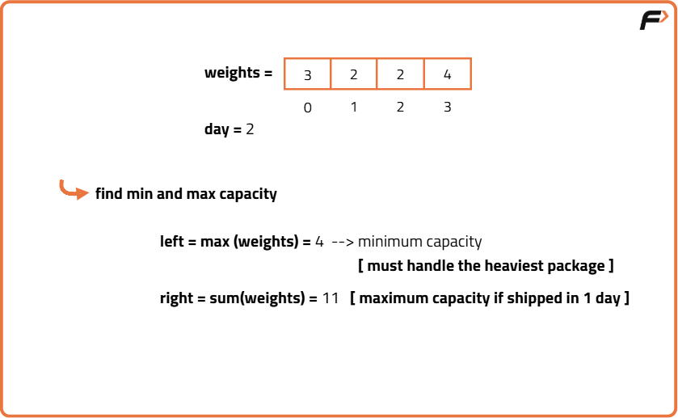
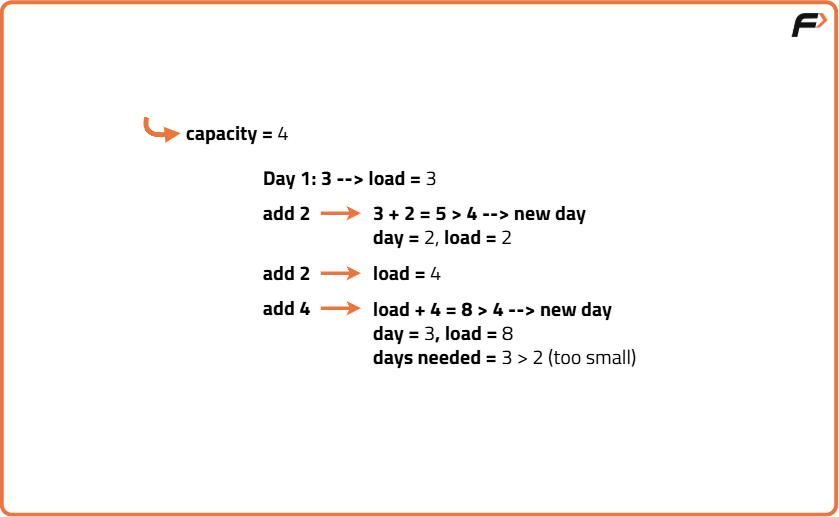
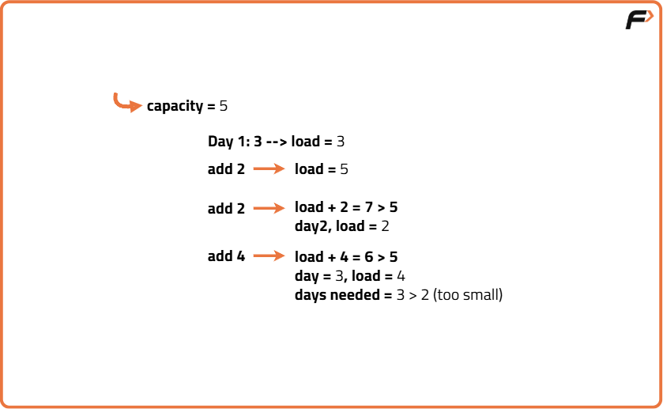
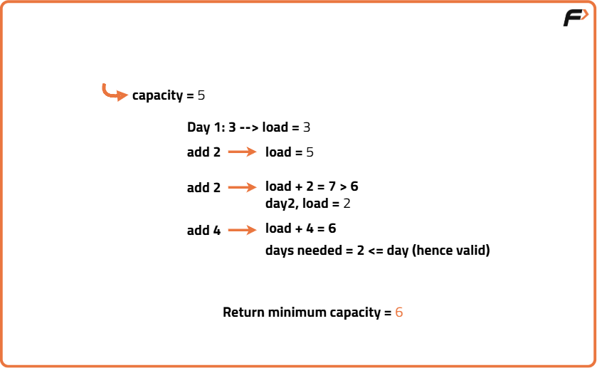
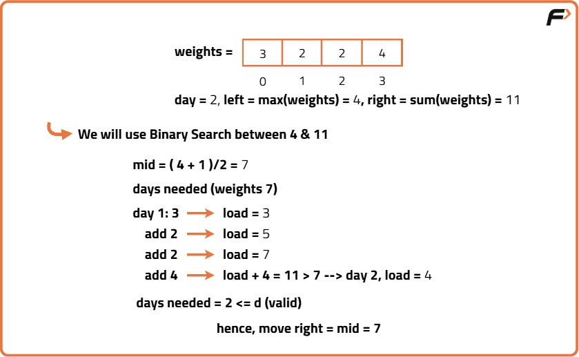
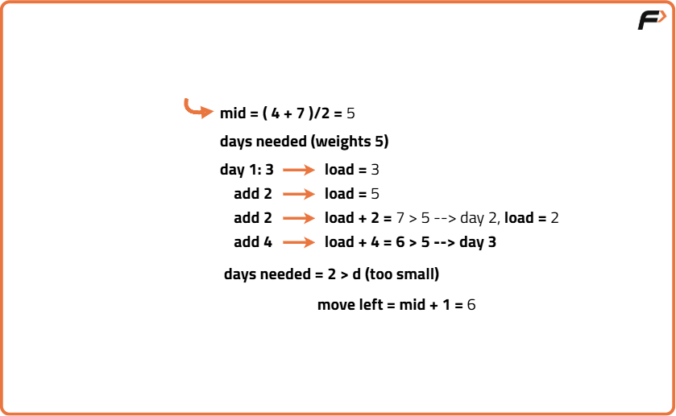
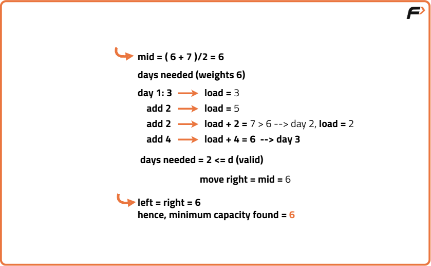

Capacity to Ship Packages within D Days
Problem Statement: You are the owner of a Shipment company. You use conveyor belts to ship packages from one port to another. The packages must be shipped within 'd' days. The weights of the packages are given in an array 'of weights'. The packages are loaded on the conveyor belts every day in the same order as they appear in the array. The loaded weights must not exceed the maximum weight capacity of the ship. Find out the least-weight capacity so that you can ship all the packages within 'd' days .
Examples
Input: N = 5, weights = [5, 4, 5, 2, 3, 4, 5, 6], d = 5 Output: 9 Explanation: The minimum ship capacity needed to ship all packages within 5 days is 9.
Input: N = 3, weights = [1, 2, 3, 4, 5], d = 2 Output: 9 Explanation: With a capacity of 9, the packages can be shipped in 2 days as [1,2,3,4] and [5].
Disclaimer: Don’t jump directly to the solution, try it out yourself first.
Brute Force Approach
Algorithm
- Find the maximum weight in the array (minimum capacity possible).
- Calculate the sum of all weights (maximum capacity possible).
- For each capacity from max weight to sum:
- Simulate shipping: load packages one by one until capacity is reached, then move to next day.
- If total days used is ≤ d, return that capacity.




Code
#include <bits/stdc++.h>
using namespace std;
class Solution {
public:
// Function to check how many days needed for given capacity
int daysNeeded(vector<int>& weights, int capacity) {
// Initialize day count to 1
int days = 1;
// Current load for the day
int currentLoad = 0;
// Iterate over all package weights
for (int w : weights) {
// If adding weight exceeds capacity
if (currentLoad + w > capacity) {
// Increase day count and reset load
days++;
currentLoad = w;
} else {
// Otherwise, add weight to current load
currentLoad += w;
}
}
// Return total days needed
return days;
}
// Function to find minimum ship capacity to ship in d days
int shipWithinDays(vector<int>& weights, int d) {
// Find maximum weight as minimum capacity
int left = *max_element(weights.begin(), weights.end());
// Find total sum as maximum capacity
int right = accumulate(weights.begin(), weights.end(), 0);
// Iterate from minimum to maximum capacity
for (int capacity = left; capacity <= right; capacity++) {
// Calculate days needed for current capacity
int needed = daysNeeded(weights, capacity);
// If days needed are less than or equal to d, return capacity
if (needed <= d) {
return capacity;
}
}
// Should never reach here given constraints
return right;
}
};
int main() {
// Input weights
vector<int> weights = {5,4,5,2,3,4,5,6};
// Days to ship
int d = 5;
// Create Solution instance
Solution sol;
// Call the function and print result
cout << sol.shipWithinDays(weights, d) << "\n";
return 0;
}
Complexity Analysis
Time Complexity: O((sum_weights - max_weight) * N), where N is the number of packages. For each capacity between max weight and total sum, we simulate shipping over N packages.
Space Complexity: O(1), only constant extra space is used.
Optimal Approach
Algorithm
- Set the lower bound as the maximum weight in the packages.
- Set the upper bound as the sum of all package weights.
- While the lower bound is less than or equal to the upper bound, do:
- Pick the middle value between lower and upper bounds as the candidate capacity.
- Simulate shipping with this capacity: accumulate package weights until capacity is reached, then count a day and reset accumulation.
- If the number of days used is within the allowed days, move the upper bound down to try smaller capacities.
- If the number of days exceeds the allowed days, increase the lower bound to try larger capacities.
- Return the lower bound when the search finishes as the minimum capacity needed.



Code
#include <bits/stdc++.h>
using namespace std;
class Solution {
public:
// Function to calculate how many days are needed to ship packages with given capacity
int daysNeeded(vector<int>& weights, int capacity) {
// Initialize count of days to 1 (start with day one)
int days = 1;
// Variable to track the current load on the ship for a day
int currentLoad = 0;
// Loop through each package weight in the array
for (int w : weights) {
// Check if adding current package exceeds ship capacity for the day
if (currentLoad + w > capacity) {
// Need a new day to ship this package, so increment day count
days++;
// Start new day's load with current package weight
currentLoad = w;
} else {
// If capacity not exceeded, add current package weight to the day's load
currentLoad += w;
}
}
// Return total number of days needed with this capacity
return days;
}
// Main function to find minimum capacity to ship all packages within d days
int shipWithinDays(vector<int>& weights, int d) {
// Find the maximum package weight as the minimum capacity (can't be less than this)
int left = *max_element(weights.begin(), weights.end());
// Calculate the sum of all package weights as maximum capacity (ship all at once)
int right = accumulate(weights.begin(), weights.end(), 0);
// Binary search loop to find optimal capacity between left and right
while (left < right) {
// Calculate mid value as potential capacity to test
int mid = left + (right - left) / 2;
// Calculate how many days needed if ship capacity is mid
int needed = daysNeeded(weights, mid);
// If days needed is less or equal to allowed days,
// try to reduce capacity by moving right boundary
if (needed <= d) {
right = mid;
} else {
// If days needed is more than allowed, increase capacity by moving left boundary
left = mid + 1;
}
}
// Left is now the minimum capacity that can ship packages within d days
return left;
}
};
int main() {
// Define the package weights
vector<int> weights = {5,4,5,2,3,4,5,6};
// Define number of days within which packages must be shipped
int d = 5;
// Create Solution object
Solution sol;
// Call the function and output the result
cout << sol.shipWithinDays(weights, d) << "\n";
return 0;
}
Complexity Analysis
Time Complexity: O(N * log(S)), where N is number of packages and S is the search space (sum_weights - max_weight). Each binary search step takes O(N), repeated O(log S) times.
Space Complexity: O(1), constant extra space used.